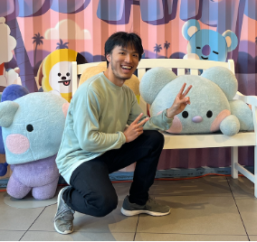

|

|
About MeI am a third-year student at Stanford University, pursuing majors in computer science and mathematics, a minor in creative writing, and a coterminal masters in computer science. I co-teach CS 106S in the Stanford School of Engineering, a survey course on coding for social good. In 2020, I was named a U.S. Presidential Scholar. My research specialises in applying machine learning to the medical imaging, climate science, and resource sustainability areas, investigating recent advances in meta-learning and deep representation learning. I'm affiliated with the Stanford AI Lab, Stanford Network Analysis Project (SNAP) group, and Medical AI Lab at Harvard Medical School as a visiting fellow. I previously worked on image-to-text models with the Stanford NLP Group, in collaboration with Google AI. Outside of major study, I love to read and explore literature. I'm broadly concerned with the short story as a phenomological object, its embedding of conscious living experience. A recent fascination has been the lyricism and iconography of queer storytelling, understanding the aesthetics of detail through the frame of cultural, mythological, and amorous semiotics. Email: bbyan [at] cs [dot] stanford [dot] edu Pronouns: he/they Astrological Sign: ♋ News
PublicationsSee my Google Scholar page. CourseworkSome of my favorite classes (listed in no particular order):
Recent Watches I've Loved
|
© Benjamin Yan 2023. Powered by homemade HTML.